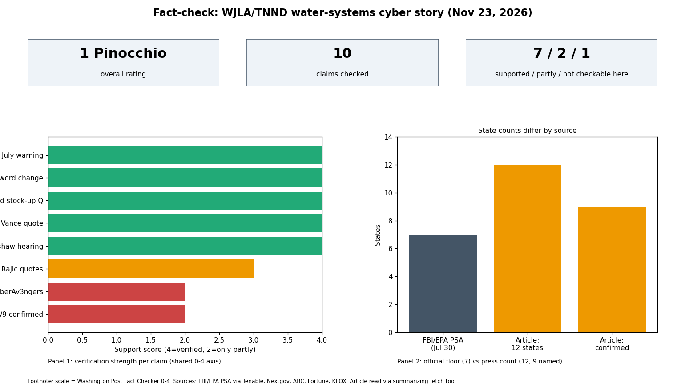

The piece's core facts hold: the July FBI/EPA warning exists, Clayton did sidestep the stock-up question, and Vance's quote is accurate. Weak spots: the Iran/CyberAv3ngers "claimed responsibility" line is a claim, not an official attribution, and the "12 states, nine confirmed" count rests on press reports (the FBI PSA says at least seven states).
| Claim | Verdict | Source |
|---|---|---|
| July FBI/EPA warning that actors target water sector | Supported (PSA dated Jul 30, 2026) | Tenable, Nextgov, FBI search result |
| Actors changed IP addresses and passwords, causing loss of monitoring/control | Supported | Tenable summary of PSA |
| Recommend removing PLCs from internet; strong passwords; ACLs | Partly: PLC exposure supported; ACLs and passwords not confirmed in the agency text I could read | Tenable, law-firm summary |
| Iranian IRGC-linked CyberAv3ngers claimed responsibility (per CSIS) | Not checkable here; officials have not attributed the Minnesota attacks; CISA AA26-097A covers Iranian PLC activity in general | Tenable, Nextgov |
| 12 states attacked, 9 confirmed | 12 reported by ABC/CBS; nine-state list only in syndicated copy; PSA says at least seven | Tenable, Nextgov |
| Walkinshaw said threats are exploding | Supported (Nov 18 House Homeland hearing) | Search coverage |
| Rajic of CSIS quotes | Not checkable here (no transcript found) | KFOX copy |
| Clayton, DNI, avoided stock-up question on CNN | Supported (CNN State of the Union, Nov 22) | Fortune; ABC transcript shows Clayton on This Week too |
| Vance: "We do not see some crisis coming down..." | Supported (Fox News, Nov 16) | Search coverage |
| Officials warn of aging infrastructure | Supported (Clayton "bumps in the road") | The Hill |